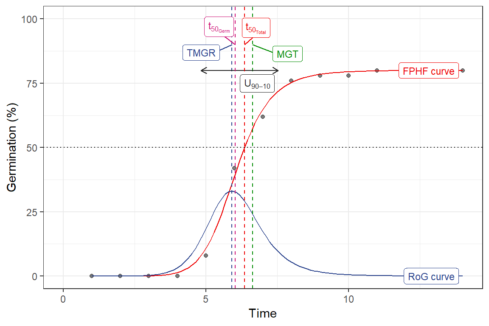
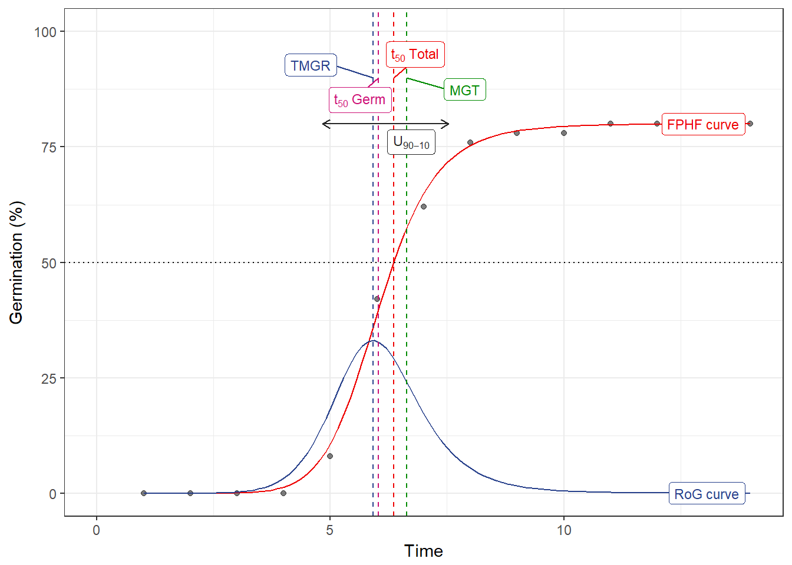
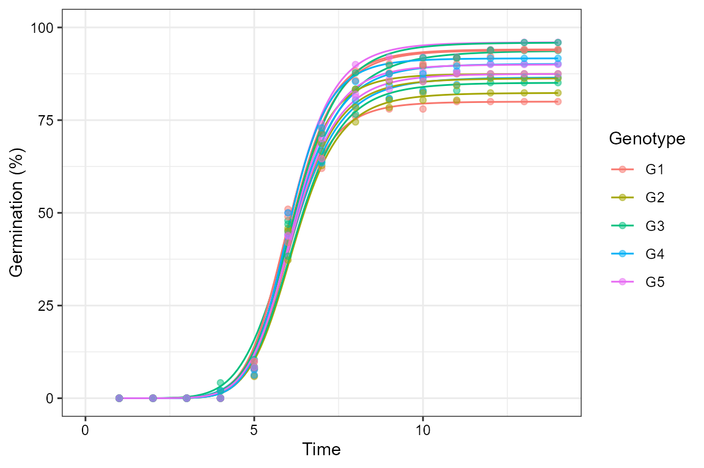
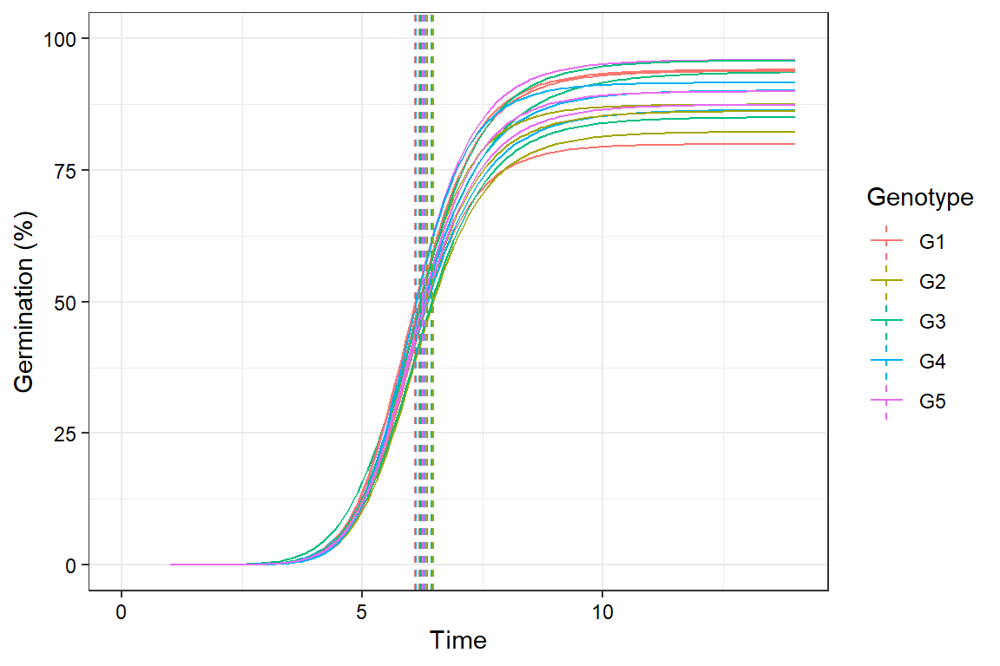
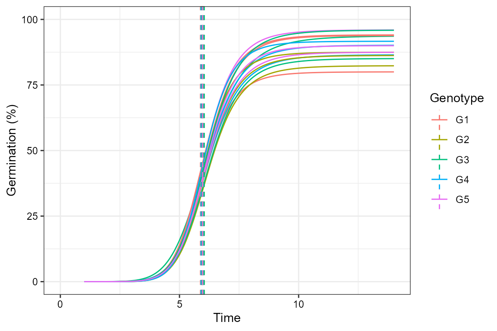
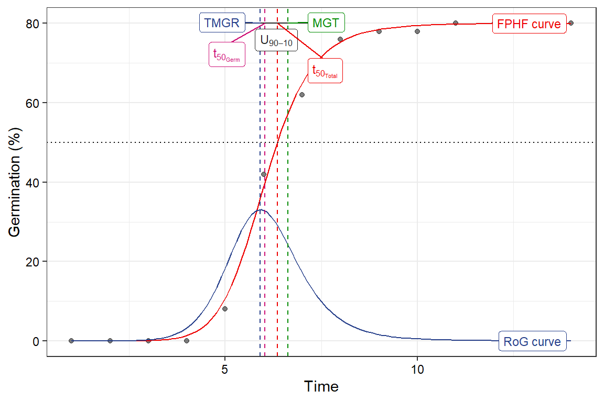
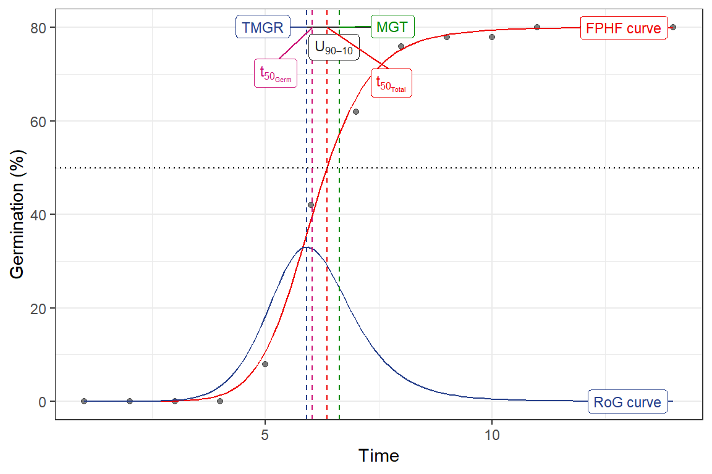

The germinationmetrics Package: A Brief Introduction
Aravind, J., Vimala Devi, S., Radhamani, J., Jacob, S. R., and Kalyani Srinivasan
2019-02-03
Source:vignettes/Introduction.Rmd
Introduction.RmdICAR-National Bureau of Plant Genetic Resources, New Delhi.

Overview
The package germinationmetrics is a collection of functions which implements various methods for describing the time-course of germination in terms of single-value germination indices as well as fitted curves.
The goal of this vignette is to introduce the users to these functions and get started in describing sequentially recorded germination count data. This document assumes a basic knowledge of R programming language.
Installation
The package can be installed using the following functions:
# Install from CRAN
install.packages('germinationmetrics', dependencies=TRUE)
# Install development version from Github
devtools::install_github("aravind-j/germinationmetrics")Then the package can be loaded using the function
Registered S3 methods overwritten by 'ggplot2':
method from
[.quosures rlang
c.quosures rlang
print.quosures rlang
--------------------------------------------------------------------------------
Welcome to germinationmetrics version 0.1.3.9000
# To know how to use this package type:
browseVignettes(package = 'germinationmetrics')
for the package vignette.
# To know whats new in this version type:
news(package='germinationmetrics')
for the NEWS file.
# To cite the methods in the package type:
citation(package='germinationmetrics')
# To suppress this message use:
suppressPackageStartupMessages(library(germinationmetrics))
--------------------------------------------------------------------------------Version History
The current version of the package is 0.1.3. The previous versions are as follows.
Table 1. Version history of germinationmetrics R package.
| Version | Date |
|---|---|
| 0.1.0 | 2018-04-17 |
| 0.1.1 | 2018-07-26 |
| 0.1.1.1 | 2018-10-16 |
| 0.1.2 | 2018-10-31 |
To know detailed history of changes use news(package='germinationmetrics').
Germination count data
Typically in a germination test, the germination count data of a fixed number of seeds is recorded at regular intervals for a definite period of time or until all the seeds have germinated. These germination count data can be either partial or cumulative (Table 2).
Table 2 : A typical germination count data.
| intervals | counts | cumulative.counts |
|---|---|---|
| 1 | 0 | 0 |
| 2 | 0 | 0 |
| 3 | 0 | 0 |
| 4 | 0 | 0 |
| 5 | 4 | 4 |
| 6 | 17 | 21 |
| 7 | 10 | 31 |
| 8 | 7 | 38 |
| 9 | 1 | 39 |
| 10 | 0 | 39 |
| 11 | 1 | 40 |
| 12 | 0 | 40 |
| 13 | 0 | 40 |
| 14 | 0 | 40 |
The time-course of germination can be plotted as follows:
Single-value germination indices
The details about the single-value germination indices implemented in germinationmetrics are described in Table 3.
Table 3 : Single-value germination indices implemented in germinationmetrics.
| Germination index | function | Details | Unit | Measures | Reference |
|---|---|---|---|---|---|
| Germination percentage or Germinability (\(GP\)) | GermPercent |
It is computed as follows: \[GP = \frac{N_{g}}{N_{t}} \times 100\] Where, \(N_{g}\) is the number of germinated seeds and \(N_{t}\) is the total number of seeds. |
Percentage (%) | Germination capacity | ISTA (2015) |
| Time for the first germination or Germination time lag (\(t_{0}\)) | FirstGermTime |
It is the time for first germination to occur (e.g. First day of germination) | time | Germination time | Edwards (1932); Czabator (1962); Goloff and Bazzaz (1975); Labouriau (1983a); Ranal (1999); Quintanilla et al. (2000) |
| Time for the last germination (\(t_{g}\)) | LastGermTime |
It is the time for last germination to occur ( e.g. Last day of germination) | time | Germination time | Edwards (1932) |
| Time spread of germination or Germination distribution | TimeSpreadGerm |
It is the difference between time for last germination (\(t_{g}\)) and time for first germination (\(t_{0}\)). \[Time\,spread\,of\, germination = t_{g}-t_{0}\] |
time | Germination time | Al-Mudaris (1998); Schrader and Graves (2000); Kader (2005) |
| Peak period of germination or Modal time of germination | PeakGermTime |
It is the time in which highest frequency of germinated seeds are observed and need not be unique. | time | Germination time | Ranal and Santana (2006) |
| Median germination time (\(t_{50}\)) (Coolbear) | t50 |
It is the time to reach 50% of final/maximum germination. With argument method specified as "coolbear", it is computed according to the formula by (Coolbear et al., 1984) as follows:\[t_{50}=T_{i}+\frac{(\frac{N+1}{2}-N_{i})(T_{j}-T_{i})}{N_{j}-N_{i}}\] Where, \(t_{50}\) is the median germination time, \(N\) is the final number of germinated seeds and \(N_{i}\) and \(N_{j}\) are the total number of seeds germinated in adjacent counts at time \(T_{i}\) and \(T_{j}\) respectively, when \(N_{i} < \frac{N + 1}{2} < N_{j}\). |
time | Germination time | Coolbear et al. (1984) |
| Median germination time (\(t_{50}\)) (Farooq) | t50 |
With argument method specified as "farooq", it is computed according to the formula by (Coolbear et al., 1984) as follows:\[t_{50}=T_{i}+\frac{(\frac{N}{2}-N_{i})(T_{j}-T_{i})}{N_{j}-N_{i}}\] Where, \(t_{50}\) is the median germination time, \(N\) is the final number of germinated seeds and \(N_{i}\) and \(N_{j}\) are the total number of seeds germinated in adjacent counts at time \(T_{i}\) and \(T_{j}\) respectively, when \(N_{i} < \frac{N}{2} < N_{j}\). |
time | Germination time | Farooq et al. (2005) |
| Mean germination time or Mean length of incubation time (\(\overline{T}\)) or Germination resistance (\(GR\)) or Sprouting index (\(SI\)) | MeanGermTime |
It is the average length of time required for maximum germination of a seed lot and is estimated according to the following formula. \[\overline{T} = \frac{\sum_{i=1}^{k}N_{i}T_{i}}{\sum_{i=1}^{k}N_{i}}\] Where, \(T_{i}\) is the time from the start of the experiment to the \(i\)th observation, \(N_{i}\) is the number of seeds germinated in the \(i\)th time (not the accumulated number, but the number correspondent to the \(i\)th observation) and \(k\) is the last time of germination. It is the inverse of mean germination rate (\(\overline{V}\)). \[\overline{T} = \frac{1}{\overline{V}}\] |
time | Germination time | Edmond and Drapala (1958); Czabator (1962); Smith and Millet (1964); Gordon (1969); Gordon (1971); Ellis and Roberts (1980) Labouriau (1983a); Ranal and Santana (2006) |
| Variance of germination time (\(s_{T}^{2}\)) | VarGermTime |
It is computed according to the following formula. \[s_{T}^{2} = \frac{\sum_{i=1}^{k}N_{i}(T_{i}-\overline{T})^{2}}{\sum_{i=1}^{k}N_{i}-1}\] Where, \(T_{i}\) is the time from the start of the experiment to the \(i\)th observation, \(N_{i}\) is the number of seeds germinated in the \(i\)th time (not the accumulated number, but the number correspondent to the \(i\)th observation) and \(k\) is the last time of germination. |
time | Germination time | Labouriau (1983a); Ranal and Santana (2006) |
| Standard error of germination time (\(s_{\overline{T}}\)) | SEGermTime |
It signifies the accuracy of the calculation of the mean germination time. It is estimated according to the following formula: \[s_{\overline{T}} = \sqrt{\frac{s_{T}^{2}}{\sum_{i=1}^{k}N_{i}}}\] Where, \(N_{i}\) is the number of seeds germinated in the \(i\)th time (not the accumulated number, but the number correspondent to the \(i\)th observation) and \(k\) is the last time of germination. |
time | Germination time | Labouriau (1983a); Ranal and Santana (2006) |
| Mean germination rate (\(\overline{V}\)) | MeanGermRate |
It is computed according to the following formula: \[\overline{V} = \frac{\sum_{i=1}^{k}N_{i}}{\sum_{i=1}^{k}N_{i}T_{i}}\] Where, \(T_{i}\) is the time from the start of the experiment to the \(i\)th observation, \(N_{i}\) is the number of seeds germinated in the \(i\)th time (not the accumulated number, but the number correspondent to the \(i\)th observation) and \(k\) is the last time of germination. It is the inverse of mean germination time (\(\overline{T}\)). \[\overline{V} = \frac{1}{\overline{T}}\] |
time-1 | Germination rate | Labouriau and Valadares (1976); Labouriau (1983b); Ranal and Santana (2006) |
| Coefficient of velocity of germination (\(CVG\)) or Coefficient of rate of germination (\(CRG\)) or Kotowski’s coefficient of velocity | CVG |
It is estimated according to the following formula. \[CVG = \frac{\sum_{i=1}^{k}N_{i}}{\sum_{i=1}^{k}N_{i}T_{i}} \times 100\] \[CVG = \overline{V} \times 100\] Where, \(T_{i}\) is the time from the start of the experiment to the \(i\)th observation, \(N_{i}\) is the number of seeds germinated in the \(i\)th time (not the accumulated number, but the number correspondent to the \(i\)th observation) and \(k\) is the last time of germination. |
% day -1 | Germination rate | Kotowski (1926), Nichols and Heydecker (1968); Bewley and Black (1994); Labouriau (1983b); Scott et al. (1984) |
| Variance of germination rate (\(s_{V}^{2}\)) | VarGermRate |
It is calculated according to the following formula. \[s_{V}^{2} = \overline{V}^{4} \times s_{T}^{2}\] Where, \(s_{T}^{2}\) is the variance of germination time. |
time-2 | Germination rate | Labouriau (1983b); Ranal and Santana (2006) |
| Standard error of germination rate (\(s_{\overline{V}}\)) | SEGermRate |
It is estimated according to the following formula. \[s_{\overline{V}} = \sqrt{\frac{s_{V}^{2}}{\sum_{i=1}^{k}N_{i}}}\] Where, \(N_{i}\) is the number of seeds germinated in the \(i\)th time (not the accumulated number, but the number correspondent to the \(i\)th observation) and \(k\) is the last time of germination. |
time-1 | Germination rate | Labouriau (1983b); Ranal and Santana (2006) |
| Germination rate as the reciprocal of the median time (\(v_{50}\)) | GermRateRecip |
It is the reciprocal of the median germination time (\(t_{50}\)). \[v_{50} = \frac{1}{t_{50}}\] |
time-1 | Germination rate | Went (1957); Labouriau (1983b); Ranal and Santana (2006) |
| Speed of germination or Germination rate Index or index of velocity of germination or Emergence rate index (Germination index according to AOSA) | GermSpeed |
It is the rate of germination in terms of the total number of seeds that germinate in a time interval. It is estimated as follows: \[S = \frac{N_{1}}{T_{1}} + \frac{N_{2}}{T_{2}} + \frac{N_{3}}{T_{3}} + \cdots + \frac{N_{n}}{T_{n}}\] Where, \(N_{1}\), \(N_{2}\), \(N_{3}\), \(\cdots\), \(N_{n}\) are the number of germinated seeds observed at time (days or hours) \(T_{1}\), \(T_{2}\), \(T_{3}\), \(\cdots\), \(T_{n}\) after sowing. (Not accumulated/cumulative number, but the number of seeds that germinated at the specific time). Instead of germination counts, germination percentages may also be used for computation of speed of germination. |
% time-1 | Mixed | Throneberry and Smith (1955); Maguire (1962); Allan et al. (1962); Kendrick and Frankland (1969); Bouton et al. (1976); AOSA (1983); Khandakar and Bradbeer (1983); Bradbeer (1988); Wardle et al. (1991) |
| Speed of accumulated germination | GermSpeedAccumulated |
It is estimated as follows: \[S_{accumulated} = \frac{N_{1}}{T_{1}} + \frac{N_{1} + N_{2}}{T_{2}} + \frac{N_{1} + N_{2} + N_{3}}{T_{3}} + \cdots +\frac{N_{1} + N_{2} + \cdots + N_{n}}{T_{n}}\] Where, \(N_{1}\), \(N_{2}\), \(N_{3}\), \(\cdots\), \(N_{n}\) are the number of germinated seeds observed at time (days or hours) \(T_{1}\), \(T_{2}\), \(T_{3}\), \(\cdots\), \(T_{n}\) after sowing. (Not accumulated/cumulative number, but the number of seeds that germinated at the specific time). Instead of germination counts, germination percentages may also be used for computation of speed of germination. |
% time-1 | Mixed | Bradbeer (1988); Wardle et al. (1991); Haugland and Brandsaeter (1996); Santana and Ranal (2004) |
| Corrected germination rate index | GermSpeedCorrected |
It is computed as follows: \[S_{corrected} = \frac{S}{FGP}\] Where, \(FGP\): the final germination percentage or germinability. |
time-1 | Mixed | Evetts and Burnside (1972) |
| Weighted germination percentage (\(WGP\)) | WeightGermPercent |
It is estimated as follows: \[WGP = \frac{\sum_{i=1}^{t}(t-i+1)N_{i}}{t \times N} \times 100\] Where, \(N_{i}\) is the number of seeds that germinated in the time interval \(i\) (not cumulative, but partial count), \(N\) is the total number of seeds tested and \(t\) is the total number of time intervals. |
Mixed | Reddy et al. (1985); Reddy (1978) | |
| Mean germination percentage per unit time (\(\overline{GP}\)) | MeanGermPercent |
It is estimated as follows: \[\overline{G} = \frac{GP}{T_{n}}\] Where, \(GP\) is the final germination percentage and \(T_{n}\) is the total number of intervals( e.g. days) required for final germination. |
Mixed | Czabator (1962) | |
| Number of seeds germinated per unit time \(\overline{N}\) | MeanGermNumber |
It is estimated as follows: \[\overline{N} = \frac{N_{g}}{T_{n}}\] Where, \(N_{g}\) is the number of germinated seeds and \(T_{n}\)is the total number of intervals ( e.g. days) required for final germination. |
Mixed | Khamassi et al. (2013) | |
| Timson’s index [\(\sum 10\) (Ten summation), \(\sum 5\) or \(\sum 20\)] or Germination energy index (\(GEI\)) | TimsonsIndex |
It is the progressive total of cumulative germination percentage recorded at specific intervals for a set period of time and is estimated in terms of cumulative germination percentage (\(G_{i}\)) as follows: \[\sum n = \sum_{i=1}^{t}G_{i}\] Where, \(G_{i}\) is the cumulative germination percentage in time interval \(i\) and \(t\) is the total number of time intervals. It also estimated in terms of partial germination percentage as follows: \[\sum n = \sum_{i=1}^{t}g_{i}(t-j)\] Where, \(g_{i}\) is the germination (not cumulative, but partial germination) in time interval \(i\) (\(i\) varying from \(0\) to \(t\)) and \(t\) is the total number of time intervals and \(j = i - 1\). |
Mixed | Grose and Zimmer (1958); Timson (1965); Brown and Mayer (1988); Baskin and Baskin (1998); Goodchild and Walker (1971) | |
| Modified Timson’s index (Labouriau) | TimsonsIndex |
It is estimated as Timson’s index \(T\) divided by the sum of partial germination percentages. \[T_{mod} = \frac{T}{\sum_{i=1}^{t}g_{i}}\] |
Mixed | Ranal and Santana (2006) | |
| Modified Timson’s index (Khan and Unger) | TimsonsIndex |
It is estimated as Timson’s index (\(T\)) divided by the number of intervals (\(t\)). \[T_{mod} = \frac{T}{t}\] |
Mixed | Khan and Ungar (1984) | |
| George’s index | GermRateGeorge |
It is estimated as follows: \[GR = \sum_{i=1}^{t}N_{i}K_{i}\] Where \(N_{i}\) is the number of seeds germinated by \(i\)th interval and \(K_{i}\) is the number of intervals(eg. days) until the end of the test. |
Mixed | George (1961); Tucker and Wright (1965); Nichols and Heydecker (1968) | |
| Peak value(\(PV\)) (Czabator) or Emergence Energy (\(EE\)) | PeakValue |
It is the accumulated number of seeds germinated at the point on the germination curve at which the rate of germination starts to decrease. It is computed as the maximum quotient obtained by dividing successive cumulative germination values by the relevant incubation time. | Mixed | Czabator (1962); Bonner (1967) | |
| Germination value (\(GV\)) (Czabator) | GermValue |
It is computed as follows: \[GV = PV \times MDG\] Where, \(PV\) is the peak value and \(MDG\) is the mean daily germination percentage from the onset of germination. It can also be computed for other time intervals of successive germination counts, by replacing \(MDG\) with the mean germination percentage per unit time (\(\overline{GP}\)). |
Mixed | Czabator (1962) | |
| Germination value (\(GV\)) (Diavanshir and Pourbiek) | GermValue |
It is computed as follows: \[GV = \frac{\sum DGS}{N} \times GP \times k\] Where, \(DGS\) is the daily germination speed computed by dividing cumulative germination percentage by the number of days since the since the onset of germination, \(N\) is the frequency or number of DGS calculated during the test, \(GP\) is the germination percentage expressed over 100 and \(k\) is a constant. The value of \(k\) is decided on the basis of average daily speed of germination (\(\frac{\sum DGS}{N}\)). If it is less than 10, then \(k\) value of 10 can be used and if it is more than 10, then value of 7 or 8 can be used for \(k\). \(GV\) value can be modified (\(GV_{mod}\)), to consider the entire duration from the beginning of the test instead of just from the onset of germination. |
Mixed | Djavanshir and Pourbeik (1976); Brown and Mayer (1988) | |
| Coefficient of uniformity of germination (\(CUG\)) | CUGerm |
It is computed as follows: \[CV_{T} = \frac{\sum_{i=1}^{k}N_{i}}{\sum_{i=1}^{k}(\overline{T}-T_{i})^{2}N_{i}}\] Where, \(\overline{T}\) is the the mean germination time, \(T_{i}\) is the time from the start of the experiment to the \(i\)th observation (day for the example); \(N_{i}\) is the number of seeds germinated in the \(i\)th time (not the accumulated number, but the number correspondent to the \(i\)th observation), and \(k\) is the last time of germination. |
Germinatin unifromity | Heydecker (1972); Bewley and Black (1994) | |
| Coefficient of variation of the germination time (\(CV_{T}\)) | CVGermTime |
It is estimated as follows: \[CV_{T} = \sqrt{\frac{s_{T}^{2}}{\overline{T}}}\] Where, \(s_{T}^{2}\) is the variance of germination time and \(\overline{T}\) is the mean germination time. |
Germinatin unifromity | Ranal and Santana (2006) | |
| Synchronization index (\(\overline{E}\)) or Uncertainty of the germination process (\(U\)) or informational entropy (\(H\)) | GermUncertainty |
It is estimated as follows: \[\overline{E} = -\sum_{i=1}^{k}f_{i}\log_{2}f_{i}\] Where, \(f_{i}\) is the relative frequency of germination (\(f_{i}=\frac{N_{i}}{\sum_{i=1}^{k}N_{i}}\)), \(N_{i}\) is the number of seeds germinated on the \(i\)th time and \(k\) is the last day of observation. |
bit | Germination synchrony | Shannon (1948); Labouriau and Valadares (1976); Labouriau (1983b) |
| Synchrony of germination (\(Z\) index) | GermSynchrony |
It is computed as follows: \[Z=\frac{\sum_{i=1}^{k}C_{N_{i},2}}{C_{\Sigma N_{i},2}}\] Where, \(C_{N_{i},2}\) is the partial combination of the two germinated seeds from among \(N_{i}\), the number of seeds germinated on the \(i\)th time (estimated as \(C_{N_{i},2}=\frac{N{i}(N{i}-1)}{2}\)) and \(C_{\Sigma N_{i},2}\) is the partial combination of the two germinated seeds from among the total number of seeds germinated at the final count, assuming that all seeds that germinated did so simultaneously. |
Germination synchrony | Primack (1985); Ranal and Santana (2006) |
GermPercent()
x <- c(0, 0, 0, 0, 4, 17, 10, 7, 1, 0, 1, 0, 0, 0)
y <- c(0, 0, 0, 0, 4, 21, 31, 38, 39, 39, 40, 40, 40, 40)
# From partial germination counts
GermPercent(germ.counts = x, total.seeds = 50)[1] 80# From cumulative germination counts
GermPercent(germ.counts = y, total.seeds = 50, partial = FALSE)[1] 80[1] 80
FirstGermTime(), LastGermTime(), PeakGermTime(), TimeSpreadGerm()
x <- c(0, 0, 0, 0, 4, 17, 10, 7, 1, 0, 1, 0, 0, 0)
y <- c(0, 0, 0, 0, 4, 21, 31, 38, 39, 39, 40, 40, 40, 40)
z <- c(0, 0, 0, 0, 11, 11, 9, 7, 1, 0, 1, 0, 0, 0)
int <- 1:length(x)
# From partial germination counts
#----------------------------------------------------------------------------
FirstGermTime(germ.counts = x, intervals = int)[1] 5[1] 11[1] 6[1] 6Warning in PeakGermTime(germ.counts = z, intervals = int): Multiple peak
germination times exist.[1] 5 6# From cumulative germination counts
#----------------------------------------------------------------------------
FirstGermTime(germ.counts = y, intervals = int, partial = FALSE)[1] 5[1] 11[1] 6[1] 6# For multiple peak germination time
PeakGermTime(germ.counts = cumsum(z), intervals = int, partial = FALSE)Warning in PeakGermTime(germ.counts = cumsum(z), intervals = int, partial =
FALSE): Multiple peak germination times exist.[1] 5 6
t50()
x <- c(0, 0, 0, 0, 4, 17, 10, 7, 1, 0, 1, 0, 0, 0)
y <- c(0, 0, 0, 0, 4, 21, 31, 38, 39, 39, 40, 40, 40, 40)
int <- 1:length(x)
# From partial germination counts
#----------------------------------------------------------------------------
t50(germ.counts = x, intervals = int, method = "coolbear")[1] 5.970588[1] 5.941176# From cumulative germination counts
#----------------------------------------------------------------------------
t50(germ.counts = y, intervals = int, partial = FALSE, method = "coolbear")[1] 5.970588[1] 5.941176
MeanGermTime(), VarGermTime(), SEGermTime(), CVGermTime()
x <- c(0, 0, 0, 0, 4, 17, 10, 7, 1, 0, 1, 0, 0, 0)
y <- c(0, 0, 0, 0, 4, 21, 31, 38, 39, 39, 40, 40, 40, 40)
int <- 1:length(x)
# From partial germination counts
#----------------------------------------------------------------------------
MeanGermTime(germ.counts = x, intervals = int)[1] 6.7[1] 1.446154[1] 0.1901416[1] 0.1794868# From cumulative germination counts
#----------------------------------------------------------------------------
MeanGermTime(germ.counts = y, intervals = int, partial = FALSE)[1] 6.7[1] 19.04012[1] 0.2394781[1] 0.6512685
MeanGermRate(), CVG(), VarGermRate(), SEGermRate(), GermRateRecip()
x <- c(0, 0, 0, 0, 4, 17, 10, 7, 1, 0, 1, 0, 0, 0)
y <- c(0, 0, 0, 0, 4, 21, 31, 38, 39, 39, 40, 40, 40, 40)
int <- 1:length(x)
# From partial germination counts
#----------------------------------------------------------------------------
MeanGermRate(germ.counts = x, intervals = int)[1] 0.1492537[1] 14.92537[1] 0.0007176543[1] 0.004235724[1] 0.1674877[1] 0.1683168# From cumulative germination counts
#----------------------------------------------------------------------------
MeanGermRate(germ.counts = y, intervals = int, partial = FALSE)[1] 0.1492537[1] 14.92537[1] 0.009448666[1] 0.005334776[1] 0.1674877[1] 0.1683168
GermSpeed(), GermSpeedAccumulated(), GermSpeedCorrected()
x <- c(0, 0, 0, 0, 4, 17, 10, 7, 1, 0, 1, 0, 0, 0)
y <- c(0, 0, 0, 0, 4, 21, 31, 38, 39, 39, 40, 40, 40, 40)
int <- 1:length(x)
# From partial germination counts
#----------------------------------------------------------------------------
GermSpeed(germ.counts = x, intervals = int)[1] 6.138925[1] 34.61567[1] 0.07673656[1] 0.4326958# From partial germination counts (with percentages instead of counts)
#----------------------------------------------------------------------------
GermSpeed(germ.counts = x, intervals = int,
percent = TRUE, total.seeds = 50)[1] 12.27785[1] 69.23134# From cumulative germination counts
#----------------------------------------------------------------------------
GermSpeed(germ.counts = y, intervals = int, partial = FALSE)[1] 6.138925[1] 34.61567GermSpeedCorrected(germ.counts = y, intervals = int,
partial = FALSE, total.seeds = 50, method = "normal")[1] 0.07673656GermSpeedCorrected(germ.counts = y, intervals = int,
partial = FALSE, total.seeds = 50, method = "accumulated")[1] 0.4326958# From cumulative germination counts (with percentages instead of counts)
#----------------------------------------------------------------------------
GermSpeed(germ.counts = y, intervals = int, partial = FALSE,
percent = TRUE, total.seeds = 50)[1] 12.27785GermSpeedAccumulated(germ.counts = y, intervals = int, partial = FALSE,
percent = TRUE, total.seeds = 50)[1] 69.23134
GermSpeed(), GermSpeedAccumulated(), GermSpeedCorrected()
x <- c(0, 0, 0, 0, 4, 17, 10, 7, 1, 0, 1, 0, 0, 0)
y <- c(0, 0, 0, 0, 4, 21, 31, 38, 39, 39, 40, 40, 40, 40)
int <- 1:length(x)
# From partial germination counts
#----------------------------------------------------------------------------
GermSpeed(germ.counts = x, intervals = int)[1] 6.138925[1] 34.61567[1] 0.07673656[1] 0.4326958# From partial germination counts (with percentages instead of counts)
#----------------------------------------------------------------------------
GermSpeed(germ.counts = x, intervals = int,
percent = TRUE, total.seeds = 50)[1] 12.27785[1] 69.23134# From cumulative germination counts
#----------------------------------------------------------------------------
GermSpeed(germ.counts = y, intervals = int, partial = FALSE)[1] 6.138925[1] 34.61567GermSpeedCorrected(germ.counts = y, intervals = int,
partial = FALSE, total.seeds = 50, method = "normal")[1] 0.07673656GermSpeedCorrected(germ.counts = y, intervals = int,
partial = FALSE, total.seeds = 50, method = "accumulated")[1] 0.4326958# From cumulative germination counts (with percentages instead of counts)
#----------------------------------------------------------------------------
GermSpeed(germ.counts = y, intervals = int, partial = FALSE,
percent = TRUE, total.seeds = 50)[1] 12.27785GermSpeedAccumulated(germ.counts = y, intervals = int, partial = FALSE,
percent = TRUE, total.seeds = 50)[1] 69.23134
WeightGermPercent()
x <- c(0, 0, 0, 0, 4, 17, 10, 7, 1, 0, 1, 0, 0, 0)
y <- c(0, 0, 0, 0, 4, 21, 31, 38, 39, 39, 40, 40, 40, 40)
int <- 1:length(x)
# From partial germination counts
#----------------------------------------------------------------------------
WeightGermPercent(germ.counts = x, total.seeds = 50, intervals = int)[1] 47.42857# From cumulative germination counts
#----------------------------------------------------------------------------
WeightGermPercent(germ.counts = y, total.seeds = 50, intervals = int,
partial = FALSE)[1] 47.42857
MeanGermPercent(), MeanGermNumber()
x <- c(0, 0, 0, 0, 4, 17, 10, 7, 1, 0, 1, 0, 0, 0)
y <- c(0, 0, 0, 0, 4, 21, 31, 38, 39, 39, 40, 40, 40, 40)
int <- 1:length(x)
# From partial germination counts
#----------------------------------------------------------------------------
MeanGermPercent(germ.counts = x, total.seeds = 50, intervals = int)[1] 5.714286[1] 2.857143# From cumulative germination counts
#----------------------------------------------------------------------------
MeanGermPercent(germ.counts = y, total.seeds = 50, intervals = int, partial = FALSE)[1] 5.714286[1] 2.857143# From number of germinated seeds
#----------------------------------------------------------------------------
MeanGermPercent(germinated.seeds = 40, total.seeds = 50, intervals = int)[1] 5.714286
TimsonsIndex(), GermRateGeorge()
x <- c(0, 0, 0, 0, 4, 17, 10, 7, 1, 0, 1, 0, 0, 0)
y <- c(0, 0, 0, 0, 4, 21, 31, 38, 39, 39, 40, 40, 40, 40)
int <- 1:length(x)
# From partial germination counts
#----------------------------------------------------------------------------
# Wihout max specified
TimsonsIndex(germ.counts = x, intervals = int, total.seeds = 50)[1] 664[1] 664[1] 8.3[1] 47.42857[1] 344[1] 344TimsonsIndex(germ.counts = x, intervals = int, total.seeds = 50,
max = 10, modification = "labouriau")[1] 4.410256TimsonsIndex(germ.counts = x, intervals = int, total.seeds = 50,
max = 10, modification = "khanungar")[1] 24.57143[1] 332[1] 172[1] 332# From cumulative germination counts
#----------------------------------------------------------------------------
# Wihout max specified
GermRateGeorge(germ.counts = x, intervals = int, partial = TRUE)[1] 332[1] 172[1] 332
PeakValue(), GermValue()
x <- c(0, 0, 34, 40, 21, 10, 4, 5, 3, 5, 8, 7, 7, 6, 6, 4, 0, 2, 0, 2)
y <- c(0, 0, 34, 74, 95, 105, 109, 114, 117, 122, 130, 137, 144, 150,
156, 160, 160, 162, 162, 164)
int <- 1:length(x)
total.seeds = 200
# From partial germination counts
#----------------------------------------------------------------------------
PeakValue(germ.counts = x, intervals = int, total.seeds = 200)[1] 9.5$`Germination Value`
[1] 38.95
[[2]]
germ.counts intervals Cumulative.germ.counts Cumulative.germ.percent
3 34 3 34 17.0
4 40 4 74 37.0
5 21 5 95 47.5
6 10 6 105 52.5
7 4 7 109 54.5
8 5 8 114 57.0
9 3 9 117 58.5
10 5 10 122 61.0
11 8 11 130 65.0
12 7 12 137 68.5
13 7 13 144 72.0
14 6 14 150 75.0
15 6 15 156 78.0
16 4 16 160 80.0
17 0 17 160 80.0
18 2 18 162 81.0
19 0 19 162 81.0
20 2 20 164 82.0
DGS
3 5.666667
4 9.250000
5 9.500000
6 8.750000
7 7.785714
8 7.125000
9 6.500000
10 6.100000
11 5.909091
12 5.708333
13 5.538462
14 5.357143
15 5.200000
16 5.000000
17 4.705882
18 4.500000
19 4.263158
20 4.100000$`Germination Value`
[1] 53.36595
[[2]]
germ.counts intervals Cumulative.germ.counts Cumulative.germ.percent
3 34 3 34 17.0
4 40 4 74 37.0
5 21 5 95 47.5
6 10 6 105 52.5
7 4 7 109 54.5
8 5 8 114 57.0
9 3 9 117 58.5
10 5 10 122 61.0
11 8 11 130 65.0
12 7 12 137 68.5
13 7 13 144 72.0
14 6 14 150 75.0
15 6 15 156 78.0
16 4 16 160 80.0
17 0 17 160 80.0
18 2 18 162 81.0
19 0 19 162 81.0
20 2 20 164 82.0
DGS SumDGSbyN GV
3 5.666667 5.666667 9.633333
4 9.250000 7.458333 27.595833
5 9.500000 8.138889 38.659722
6 8.750000 8.291667 43.531250
7 7.785714 8.190476 44.638095
8 7.125000 8.012897 45.673512
9 6.500000 7.796769 45.611097
10 6.100000 7.584673 46.266503
11 5.909091 7.398497 48.090230
12 5.708333 7.229481 49.521942
13 5.538462 7.075752 50.945411
14 5.357143 6.932534 51.994006
15 5.200000 6.799262 53.034246
16 5.000000 6.670744 53.365948
17 4.705882 6.539753 52.318022
18 4.500000 6.412268 51.939373
19 4.263158 6.285850 50.915385
20 4.100000 6.164414 50.548194
$testend
[1] 16GermValue(germ.counts = x, intervals = int, total.seeds = 200,
method = "czabator", from.onset = FALSE)$`Germination Value`
[1] 38.95
[[2]]
germ.counts intervals Cumulative.germ.counts Cumulative.germ.percent
1 0 1 0 0.0
2 0 2 0 0.0
3 34 3 34 17.0
4 40 4 74 37.0
5 21 5 95 47.5
6 10 6 105 52.5
7 4 7 109 54.5
8 5 8 114 57.0
9 3 9 117 58.5
10 5 10 122 61.0
11 8 11 130 65.0
12 7 12 137 68.5
13 7 13 144 72.0
14 6 14 150 75.0
15 6 15 156 78.0
16 4 16 160 80.0
17 0 17 160 80.0
18 2 18 162 81.0
19 0 19 162 81.0
20 2 20 164 82.0
DGS
1 0.000000
2 0.000000
3 5.666667
4 9.250000
5 9.500000
6 8.750000
7 7.785714
8 7.125000
9 6.500000
10 6.100000
11 5.909091
12 5.708333
13 5.538462
14 5.357143
15 5.200000
16 5.000000
17 4.705882
18 4.500000
19 4.263158
20 4.100000GermValue(germ.counts = x, intervals = int, total.seeds = 200,
method = "dp", k = 10, from.onset = FALSE)$`Germination Value`
[1] 46.6952
[[2]]
germ.counts intervals Cumulative.germ.counts Cumulative.germ.percent
1 0 1 0 0.0
2 0 2 0 0.0
3 34 3 34 17.0
4 40 4 74 37.0
5 21 5 95 47.5
6 10 6 105 52.5
7 4 7 109 54.5
8 5 8 114 57.0
9 3 9 117 58.5
10 5 10 122 61.0
11 8 11 130 65.0
12 7 12 137 68.5
13 7 13 144 72.0
14 6 14 150 75.0
15 6 15 156 78.0
16 4 16 160 80.0
17 0 17 160 80.0
18 2 18 162 81.0
19 0 19 162 81.0
20 2 20 164 82.0
DGS SumDGSbyN GV
1 0.000000 0.000000 0.000000
2 0.000000 0.000000 0.000000
3 5.666667 1.888889 3.211111
4 9.250000 3.729167 13.797917
5 9.500000 4.883333 23.195833
6 8.750000 5.527778 29.020833
7 7.785714 5.850340 31.884354
8 7.125000 6.009673 34.255134
9 6.500000 6.064153 35.475298
10 6.100000 6.067738 37.013202
11 5.909091 6.053316 39.346552
12 5.708333 6.024567 41.268285
13 5.538462 5.987174 43.107655
14 5.357143 5.942172 44.566291
15 5.200000 5.892694 45.963013
16 5.000000 5.836901 46.695205
17 4.705882 5.770370 46.162961
18 4.500000 5.699794 46.168331
19 4.263158 5.624182 45.555871
20 4.100000 5.547972 45.493374
$testend
[1] 16# From cumulative germination counts
#----------------------------------------------------------------------------
PeakValue(germ.counts = y, interval = int, total.seeds = 200,
partial = FALSE)[1] 9.5GermValue(germ.counts = y, intervals = int, total.seeds = 200,
partial = FALSE, method = "czabator")$`Germination Value`
[1] 38.95
[[2]]
germ.counts intervals Cumulative.germ.counts Cumulative.germ.percent
3 34 3 34 17.0
4 40 4 74 37.0
5 21 5 95 47.5
6 10 6 105 52.5
7 4 7 109 54.5
8 5 8 114 57.0
9 3 9 117 58.5
10 5 10 122 61.0
11 8 11 130 65.0
12 7 12 137 68.5
13 7 13 144 72.0
14 6 14 150 75.0
15 6 15 156 78.0
16 4 16 160 80.0
17 0 17 160 80.0
18 2 18 162 81.0
19 0 19 162 81.0
20 2 20 164 82.0
DGS
3 5.666667
4 9.250000
5 9.500000
6 8.750000
7 7.785714
8 7.125000
9 6.500000
10 6.100000
11 5.909091
12 5.708333
13 5.538462
14 5.357143
15 5.200000
16 5.000000
17 4.705882
18 4.500000
19 4.263158
20 4.100000GermValue(germ.counts = y, intervals = int, total.seeds = 200,
partial = FALSE, method = "dp", k = 10)$`Germination Value`
[1] 53.36595
[[2]]
germ.counts intervals Cumulative.germ.counts Cumulative.germ.percent
3 34 3 34 17.0
4 40 4 74 37.0
5 21 5 95 47.5
6 10 6 105 52.5
7 4 7 109 54.5
8 5 8 114 57.0
9 3 9 117 58.5
10 5 10 122 61.0
11 8 11 130 65.0
12 7 12 137 68.5
13 7 13 144 72.0
14 6 14 150 75.0
15 6 15 156 78.0
16 4 16 160 80.0
17 0 17 160 80.0
18 2 18 162 81.0
19 0 19 162 81.0
20 2 20 164 82.0
DGS SumDGSbyN GV
3 5.666667 5.666667 9.633333
4 9.250000 7.458333 27.595833
5 9.500000 8.138889 38.659722
6 8.750000 8.291667 43.531250
7 7.785714 8.190476 44.638095
8 7.125000 8.012897 45.673512
9 6.500000 7.796769 45.611097
10 6.100000 7.584673 46.266503
11 5.909091 7.398497 48.090230
12 5.708333 7.229481 49.521942
13 5.538462 7.075752 50.945411
14 5.357143 6.932534 51.994006
15 5.200000 6.799262 53.034246
16 5.000000 6.670744 53.365948
17 4.705882 6.539753 52.318022
18 4.500000 6.412268 51.939373
19 4.263158 6.285850 50.915385
20 4.100000 6.164414 50.548194
$testend
[1] 16GermValue(germ.counts = y, intervals = int, total.seeds = 200,
partial = FALSE, method = "czabator", from.onset = FALSE)$`Germination Value`
[1] 38.95
[[2]]
germ.counts intervals Cumulative.germ.counts Cumulative.germ.percent
1 0 1 0 0.0
2 0 2 0 0.0
3 34 3 34 17.0
4 40 4 74 37.0
5 21 5 95 47.5
6 10 6 105 52.5
7 4 7 109 54.5
8 5 8 114 57.0
9 3 9 117 58.5
10 5 10 122 61.0
11 8 11 130 65.0
12 7 12 137 68.5
13 7 13 144 72.0
14 6 14 150 75.0
15 6 15 156 78.0
16 4 16 160 80.0
17 0 17 160 80.0
18 2 18 162 81.0
19 0 19 162 81.0
20 2 20 164 82.0
DGS
1 0.000000
2 0.000000
3 5.666667
4 9.250000
5 9.500000
6 8.750000
7 7.785714
8 7.125000
9 6.500000
10 6.100000
11 5.909091
12 5.708333
13 5.538462
14 5.357143
15 5.200000
16 5.000000
17 4.705882
18 4.500000
19 4.263158
20 4.100000GermValue(germ.counts = y, intervals = int, total.seeds = 200,
partial = FALSE, method = "dp", k = 10, from.onset = FALSE)$`Germination Value`
[1] 46.6952
[[2]]
germ.counts intervals Cumulative.germ.counts Cumulative.germ.percent
1 0 1 0 0.0
2 0 2 0 0.0
3 34 3 34 17.0
4 40 4 74 37.0
5 21 5 95 47.5
6 10 6 105 52.5
7 4 7 109 54.5
8 5 8 114 57.0
9 3 9 117 58.5
10 5 10 122 61.0
11 8 11 130 65.0
12 7 12 137 68.5
13 7 13 144 72.0
14 6 14 150 75.0
15 6 15 156 78.0
16 4 16 160 80.0
17 0 17 160 80.0
18 2 18 162 81.0
19 0 19 162 81.0
20 2 20 164 82.0
DGS SumDGSbyN GV
1 0.000000 0.000000 0.000000
2 0.000000 0.000000 0.000000
3 5.666667 1.888889 3.211111
4 9.250000 3.729167 13.797917
5 9.500000 4.883333 23.195833
6 8.750000 5.527778 29.020833
7 7.785714 5.850340 31.884354
8 7.125000 6.009673 34.255134
9 6.500000 6.064153 35.475298
10 6.100000 6.067738 37.013202
11 5.909091 6.053316 39.346552
12 5.708333 6.024567 41.268285
13 5.538462 5.987174 43.107655
14 5.357143 5.942172 44.566291
15 5.200000 5.892694 45.963013
16 5.000000 5.836901 46.695205
17 4.705882 5.770370 46.162961
18 4.500000 5.699794 46.168331
19 4.263158 5.624182 45.555871
20 4.100000 5.547972 45.493374
$testend
[1] 16
CUGerm()
x <- c(0, 0, 0, 0, 4, 17, 10, 7, 1, 0, 1, 0, 0, 0)
y <- c(0, 0, 0, 0, 4, 21, 31, 38, 39, 39, 40, 40, 40, 40)
int <- 1:length(x)
# From partial germination counts
#----------------------------------------------------------------------------
CUGerm(germ.counts = x, intervals = int)[1] 0.7092199# From cumulative germination counts
#----------------------------------------------------------------------------
CUGerm(germ.counts = y, intervals = int, partial = FALSE)[1] 0.05267935
GermSynchrony(), GermUncertainty()
x <- c(0, 0, 0, 0, 4, 17, 10, 7, 1, 0, 1, 0, 0, 0)
y <- c(0, 0, 0, 0, 4, 21, 31, 38, 39, 39, 40, 40, 40, 40)
int <- 1:length(x)
# From partial germination counts
#----------------------------------------------------------------------------
GermSynchrony(germ.counts = x, intervals = int)[1] 0.2666667[1] 2.062987# From cumulative germination counts
#----------------------------------------------------------------------------
GermSynchrony(germ.counts = y, intervals = int, partial = FALSE)[1] 0.2666667[1] 2.062987Curve fitting
Several mathematical functions have been used to fit the cumulative germination count data and describe the germination process such as Richard’s, Weibull, logistic, log-logistic, gaussian, four-parameter hill function etc. Currently germinationmetrics implements the four-parameter hill function to fit the count data and computed various associated metrics.
Four-parameter hill function
The four-parameter hill function defined as follows (El-Kassaby et al., 2008):
\[ f(x) = y = y_0 + \frac{ax^b}{x^b+c^b} \] Where, \(y\) is the cumulative germination percentage at time \(x\), \(y_{0}\) is the intercept on the y axis, \(a\) is the asymptote, \(b\) is a mathematical parameter controlling the shape and steepness of the germination curve and \(c\) is the “half-maximal activation level”.
The details of various parameters that are computed from this function are given in Table 4.
Table 4 Germination parameters estimated from the four-parameter hill function.
| Germination parameters | Details | Unit | Measures |
|---|---|---|---|
| y intercept (\(y_{0}\)) | The intercept on the y axis. | ||
| Asymptote (\(a\)) | It is the maximum cumulative germination percentage, which is equivalent to germination capacity. | % | Germination capacity |
| Shape and steepness (\(b\)) | Mathematical parameter controlling the shape and steepness of the germination curve. The larger the \(b\) , the steeper the rise toward the asymptote \(a\), and the shorter the time between germination onset and maximum germination. | Germination rate | |
| Half-maximal activation level (\(c\)) | Time required for 50% of viable seeds to germinate. | time | Germination time |
| \(lag\) | It is the time at germination onset and is computed by solving four-parameter hill function after setting y to 0 as follows: \[lag = b\sqrt{\frac{-y_{0}c^{b}}{a + y_{0}}}\] |
time | Germination time |
| \(D_{lag-50}\) | The duration between the time at germination onset (\(lag\)) and that at 50% germination (\(c\)). | time | Germination time |
| \(t_{50_{total}}\) | Time required for 50% of total seeds to germinate. | time | Germination time |
| \(t_{50_{germinated}}\) | Time required for 50% of viable/germinated seeds to germinate | time | Germination time |
| \(t_{x_{total}}\) | Time required for \(x\)% of total seeds to germinate. | time | Germination time |
| \(t_{x_{germinated}}\) | Time required for \(x\)% of viable/germinated seeds to germinate | time | Germination time |
| Uniformity (\(U_{t_{max}-t_{min}}\)) | It is the time interval between the percentages of viable seeds specified in the arguments umin and umin to germinate. |
time | Germination time |
| Time at maximum germination rate (\(TMGR\)) | The partial derivative of the four-parameter hill function gives the instantaneous rate of germination (\(s\)) as follows: \[s = \frac{\partial y}{\partial x} = \frac{abc^{b}x^{b-1}}{(c^{b}+x^{b})^{2}}\] From this function for instantaneous rate of germination, \(TMGR\) can be estimated as follows: \[TMGR = b \sqrt{\frac{c^{b}(b-1)}{b+1}}\] It represents the point in time when the instantaneous rate of germination starts to decline. |
time | Germination time |
| Area under the curve (\(AUC\)) | It is obtained by integration of the fitted curve between time 0 and time specified in the argument tmax. |
Mixed | |
| \(MGT\) | Calculated by integration of the fitted curve and proper normalisation. | time | Germination time |
| \(Skewness\) | It is computed as follows: \[\frac{MGT}{t_{50_{germinated}}}\] |
FourPHFfit()
x <- c(0, 0, 0, 0, 4, 17, 10, 7, 1, 0, 1, 0, 0, 0)
y <- c(0, 0, 0, 0, 4, 21, 31, 38, 39, 39, 40, 40, 40, 40)
int <- 1:length(x)
total.seeds = 50
# From partial germination counts
#----------------------------------------------------------------------------
FourPHFfit(germ.counts = x, intervals = int, total.seeds = 50, tmax = 20)$data
gp csgp intervals
1 0 0 1
2 0 0 2
3 0 0 3
4 0 0 4
5 8 8 5
6 34 42 6
7 20 62 7
8 14 76 8
9 2 78 9
10 0 78 10
11 2 80 11
12 0 80 12
13 0 80 13
14 0 80 14
$Parameters
term estimate std.error statistic p.value
1 a 80.000000 1.24158595 64.43372 1.973240e-14
2 b 9.881947 0.70779379 13.96162 6.952322e-08
3 c 6.034954 0.04952654 121.85294 3.399385e-17
4 y0 0.000000 0.91607007 0.00000 1.000000e+00
$Fit
sigma isConv finTol logLik AIC BIC deviance
1 1.769385 TRUE 1.490116e-08 -25.49868 60.99736 64.19265 31.30723
df.residual
1 10
$a
[1] 80
$b
[1] 9.881947
$c
[1] 6.034954
$y0
[1] 0
$lag
[1] 0
$Dlag50
[1] 6.034954
$t50.total
[1] 6.355122
$txp.total
[1] 4.956266 6.744598
$t50.Germinated
[1] 6.034954
$txp.Germinated
[1] 4.831809 6.287724
$Uniformity
90 10 uniformity
7.537688 4.831809 2.705880
$TMGR
[1] 5.912195
$AUC
[1] 1108.975
$MGT
[1] 6.632252
$Skewness
[1] 1.098973
$msg
[1] "#1. Relative error in the sum of squares is at most `ftol'. "
$isConv
[1] TRUE
attr(,"class")
[1] "FourPHFfit"# From cumulative germination counts
#----------------------------------------------------------------------------
FourPHFfit(germ.counts = y, intervals = int, total.seeds = 50, tmax = 20,
partial = FALSE)$data
gp csgp intervals
1 0 0 1
2 0 0 2
3 0 0 3
4 0 0 4
5 8 8 5
6 34 42 6
7 20 62 7
8 14 76 8
9 2 78 9
10 0 78 10
11 2 80 11
12 0 80 12
13 0 80 13
14 0 80 14
$Parameters
term estimate std.error statistic p.value
1 a 80.000000 1.2415867 64.43368 1.973252e-14
2 b 9.881927 0.7077918 13.96163 6.952270e-08
3 c 6.034953 0.0495266 121.85275 3.399437e-17
4 y0 0.000000 0.9160705 0.00000 1.000000e+00
$Fit
sigma isConv finTol logLik AIC BIC deviance
1 1.769385 TRUE 1.490116e-08 -25.49868 60.99736 64.19265 31.30723
df.residual
1 10
$a
[1] 80
$b
[1] 9.881927
$c
[1] 6.034953
$y0
[1] 0
$lag
[1] 0
$Dlag50
[1] 6.034953
$t50.total
[1] 6.355121
$txp.total
[1] 4.956263 6.744599
$t50.Germinated
[1] 6.034953
$txp.Germinated
[1] 4.831806 6.287723
$Uniformity
90 10 uniformity
7.537691 4.831806 2.705885
$TMGR
[1] 5.912194
$AUC
[1] 1108.976
$MGT
[1] 6.632252
$Skewness
[1] 1.098973
$msg
[1] "#1. Relative error in the sum of squares is at most `ftol'. "
$isConv
[1] TRUE
attr(,"class")
[1] "FourPHFfit"x <- c(0, 0, 0, 0, 4, 17, 10, 7, 1, 0, 1, 0, 0, 0)
y <- c(0, 0, 0, 0, 4, 21, 31, 38, 39, 39, 40, 40, 40, 40)
int <- 1:length(x)
total.seeds = 50
# From partial germination counts
#----------------------------------------------------------------------------
fit1 <- FourPHFfit(germ.counts = x, intervals = int,
total.seeds = 50, tmax = 20)
# From cumulative germination counts
#----------------------------------------------------------------------------
fit2 <- FourPHFfit(germ.counts = y, intervals = int,
total.seeds = 50, tmax = 20, partial = FALSE)
# Default plots
plot(fit1)



# Only the FPHF curve
plot(fit1, rog = FALSE, t50.total = FALSE, t50.germ = FALSE,
tmgr = FALSE, mgt = FALSE, uniformity = FALSE)plot(fit2, rog = FALSE, t50.total = FALSE, t50.germ = FALSE,
tmgr = FALSE, mgt = FALSE, uniformity = FALSE)


Wrapper function
The wrapper function germination.indices() can be used to compute multiple germination indices from a data frame of germination counts recorded at specific time intervals for multiple samples in batch.
germination.indices()
data(gcdata)
counts.per.intervals <- c("Day01", "Day02", "Day03", "Day04", "Day05",
"Day06", "Day07", "Day08", "Day09", "Day10",
"Day11", "Day12", "Day13", "Day14")
germination.indices(gcdata, total.seeds.col = "Total Seeds",
counts.intervals.cols = counts.per.intervals,
intervals = 1:14, partial = TRUE, max.int = 5) Genotype Rep Day01 Day02 Day03 Day04 Day05 Day06 Day07 Day08 Day09
1 G1 1 0 0 0 0 4 17 10 7 1
2 G2 1 0 0 0 1 3 15 13 6 2
3 G3 1 0 0 0 2 3 18 9 8 2
4 G4 1 0 0 0 0 4 19 12 6 2
5 G5 1 0 0 0 0 5 20 12 8 1
6 G1 2 0 0 0 0 3 21 11 7 1
7 G2 2 0 0 0 0 4 18 11 7 1
8 G3 2 0 0 0 1 3 14 12 6 2
9 G4 2 0 0 0 1 3 19 10 8 1
10 G5 2 0 0 0 0 4 18 13 6 2
11 G1 3 0 0 0 0 5 21 11 8 1
12 G2 3 0 0 0 0 3 20 10 7 1
13 G3 3 0 0 0 0 4 19 12 8 1
14 G4 3 0 0 0 0 3 21 11 6 1
15 G5 3 0 0 0 0 4 17 10 8 1
Day10 Day11 Day12 Day13 Day14 Total Seeds GermPercent FirstGermTime
1 0 1 0 0 0 50 80.00000 5
2 1 0 1 0 0 51 82.35294 4
3 1 1 1 0 0 48 93.75000 4
4 1 1 1 0 0 51 90.19608 5
5 0 0 1 1 0 50 96.00000 5
6 1 1 1 0 0 49 93.87755 5
7 0 1 0 0 0 48 87.50000 5
8 1 0 1 0 0 47 85.10638 4
9 1 1 1 0 0 52 86.53846 4
10 1 0 1 0 0 50 90.00000 5
11 0 0 1 1 0 51 94.11765 5
12 1 1 1 0 0 51 86.27451 5
13 1 0 1 1 0 49 95.91837 5
14 0 1 1 0 0 48 91.66667 5
15 1 1 0 0 0 48 87.50000 5
LastGermTime PeakGermTime TimeSpreadGerm t50_Coolbear t50_Farooq
1 11 6 6 5.970588 5.941176
2 12 6 8 6.192308 6.153846
3 12 6 8 6.000000 5.972222
4 12 6 7 6.041667 6.000000
5 13 6 8 5.975000 5.950000
6 12 6 7 5.976190 5.952381
7 11 6 6 5.972222 5.944444
8 12 6 8 6.208333 6.166667
9 12 6 8 6.000000 5.973684
10 12 6 7 6.076923 6.038462
11 13 6 8 5.928571 5.904762
12 12 6 7 5.975000 5.950000
13 13 6 8 6.083333 6.041667
14 12 6 7 5.928571 5.904762
15 11 6 6 6.050000 6.000000
MeanGermTime VarGermTime SEGermTime CVGermTime MeanGermRate
1 6.700000 1.446154 0.1901416 0.1794868 0.1492537
2 6.857143 2.027875 0.2197333 0.2076717 0.1458333
3 6.866667 2.572727 0.2391061 0.2335882 0.1456311
4 6.891304 2.187923 0.2180907 0.2146419 0.1451104
5 6.812500 2.368351 0.2221275 0.2259002 0.1467890
6 6.869565 2.071498 0.2122088 0.2095140 0.1455696
7 6.690476 1.389663 0.1818989 0.1761967 0.1494662
8 6.875000 2.112179 0.2297923 0.2113940 0.1454545
9 6.866667 2.300000 0.2260777 0.2208604 0.1456311
10 6.822222 1.831313 0.2017321 0.1983606 0.1465798
11 6.791667 2.381206 0.2227295 0.2272072 0.1472393
12 6.886364 2.149577 0.2210295 0.2129053 0.1452145
13 6.936170 2.539315 0.2324392 0.2297410 0.1441718
14 6.772727 1.900634 0.2078370 0.2035568 0.1476510
15 6.809524 1.670151 0.1994129 0.1897847 0.1468531
VarGermRate SEGermRate CVG GermRateRecip_Coolbear
1 0.0007176543 0.004235724 14.92537 0.1674877
2 0.0009172090 0.004673148 14.58333 0.1614907
3 0.0011572039 0.005071059 14.56311 0.1666667
4 0.0009701218 0.004592342 14.51104 0.1655172
5 0.0010995627 0.004786184 14.67890 0.1673640
6 0.0009301809 0.004496813 14.55696 0.1673307
7 0.0006935558 0.004063648 14.94662 0.1674419
8 0.0009454531 0.004861721 14.54545 0.1610738
9 0.0010345321 0.004794747 14.56311 0.1666667
10 0.0008453940 0.004334343 14.65798 0.1645570
11 0.0011191581 0.004828643 14.72393 0.1686747
12 0.0009558577 0.004660905 14.52145 0.1673640
13 0.0010970785 0.004831366 14.41718 0.1643836
14 0.0009033254 0.004531018 14.76510 0.1686747
15 0.0007767634 0.004300508 14.68531 0.1652893
GermRateRecip_Farooq GermSpeed_Count GermSpeed_Percent
1 0.1683168 6.138925 12.27785
2 0.1625000 6.362698 12.47588
3 0.1674419 6.882179 14.33787
4 0.1666667 6.927417 13.58317
5 0.1680672 7.318987 14.63797
6 0.1680000 6.931782 14.14649
7 0.1682243 6.448449 13.43427
8 0.1621622 6.053175 12.87909
9 0.1674009 6.830592 13.13575
10 0.1656051 6.812698 13.62540
11 0.1693548 7.342796 14.39764
12 0.1680672 6.622258 12.98482
13 0.1655172 7.052320 14.39249
14 0.1693548 6.706782 13.97246
15 0.1666667 6.363925 13.25818
GermSpeedAccumulated_Count GermSpeedAccumulated_Percent
1 34.61567 69.23134
2 35.54058 69.68741
3 38.29725 79.78594
4 38.68453 75.85202
5 41.00786 82.01571
6 38.77620 79.13509
7 36.38546 75.80304
8 33.77079 71.85275
9 38.11511 73.29829
10 38.19527 76.39054
11 41.17452 80.73436
12 37.00640 72.56158
13 39.29399 80.19182
14 37.69490 78.53103
15 35.69697 74.36868
GermSpeedCorrected_Normal GermSpeedCorrected_Accumulated
1 0.07673656 0.4326958
2 0.07726134 0.4315642
3 0.07340991 0.4085040
4 0.07680397 0.4288937
5 0.07623944 0.4271652
6 0.07383855 0.4130508
7 0.07369656 0.4158338
8 0.07112480 0.3968068
9 0.07893128 0.4404413
10 0.07569665 0.4243919
11 0.07801721 0.4374793
12 0.07675799 0.4289379
13 0.07352419 0.4096608
14 0.07316490 0.4112171
15 0.07273057 0.4079653
WeightGermPercent MeanGermPercent MeanGermNumber TimsonsIndex
1 47.42857 5.714286 2.857143 8.000000
2 47.89916 5.882353 3.000000 9.803922
3 54.46429 6.696429 3.214286 14.583333
4 52.24090 6.442577 3.285714 7.843137
5 56.14286 6.857143 3.428571 10.000000
6 54.51895 6.705539 3.285714 6.122449
7 51.93452 6.250000 3.000000 8.333333
8 49.39210 6.079027 2.857143 10.638298
9 50.27473 6.181319 3.214286 9.615385
10 52.57143 6.428571 3.214286 8.000000
11 55.18207 6.722689 3.428571 9.803922
12 50.00000 6.162465 3.142857 5.882353
13 55.24781 6.851312 3.357143 8.163265
14 53.86905 6.547619 3.142857 6.250000
15 51.19048 6.250000 3.000000 8.333333
TimsonsIndex_Labouriau TimsonsIndex_KhanUngar GermRateGeorge PeakValue
1 1.00 0.5714286 4 9.500000
2 1.25 0.7002801 5 9.313725
3 1.40 1.0416667 7 10.416667
4 1.00 0.5602241 4 10.049020
5 1.00 0.7142857 5 11.250000
6 1.00 0.4373178 3 10.714286
7 1.00 0.5952381 4 10.416667
8 1.25 0.7598784 5 9.574468
9 1.25 0.6868132 5 9.855769
10 1.00 0.5714286 4 10.250000
11 1.00 0.7002801 5 11.029412
12 1.00 0.4201681 3 9.803922
13 1.00 0.5830904 4 10.969388
14 1.00 0.4464286 3 10.677083
15 1.00 0.5952381 4 10.156250
GermValue_Czabator GermValue_DP GermValue_Czabator_mod GermValue_DP_mod
1 54.28571 57.93890 54.28571 39.56076
2 54.78662 52.58713 54.78662 40.99260
3 69.75446 68.62289 69.75446 53.42809
4 64.74158 70.43331 64.74158 48.86825
5 77.14286 80.16914 77.14286 56.23935
6 71.84506 76.51983 71.84506 53.06435
7 65.10417 69.41325 65.10417 47.37690
8 58.20345 56.00669 58.20345 43.67948
9 60.92165 58.13477 60.92165 45.30801
10 65.89286 70.91875 65.89286 49.10820
11 74.14731 77.39782 74.14731 54.27520
12 60.41632 64.44988 60.41632 44.71582
13 75.15470 78.16335 75.15470 54.94192
14 69.90947 74.40140 69.90947 51.41913
15 63.47656 67.62031 63.47656 46.48043
CUGerm GermSynchrony GermUncertainty
1 0.7092199 0.2666667 2.062987
2 0.5051546 0.2346109 2.321514
3 0.3975265 0.2242424 2.462012
4 0.4672113 0.2502415 2.279215
5 0.4312184 0.2606383 2.146051
6 0.4934701 0.2792271 2.160545
7 0.7371500 0.2729384 2.040796
8 0.4855842 0.2256410 2.357249
9 0.4446640 0.2494949 2.321080
10 0.5584666 0.2555556 2.187983
11 0.4288905 0.2686170 2.128670
12 0.4760266 0.2737844 2.185245
13 0.4023679 0.2506938 2.241181
14 0.5383760 0.2991543 2.037680
15 0.6133519 0.2497096 2.185028
Citing germinationmetrics
To cite the R package 'germinationmetrics' in publications use:
Aravind, J., Vimala Devi, S., Radhamani, J., Jacob, S. R., and
Kalyani Srinivasan (2019). germinationmetrics: Seed Germination
Indices and Curve Fitting. R package version 0.1.3.9000,
https://github.com/aravind-j/germinationmetricshttps://cran.r-project.org/package=germinationmetrics.
A BibTeX entry for LaTeX users is
@Manual{,
title = {germinationmetrics: Seed Germination Indices and Curve Fitting},
author = {J. Aravind and S. {Vimala Devi} and J. Radhamani and Sherry Rachel Jacob and {Kalyani Srinivasan}},
year = {2019},
note = {R package version 0.1.3.9000},
note = {https://github.com/aravind-j/germinationmetrics},
note = {https://cran.r-project.org/package=germinationmetrics},
}
This free and open-source software implements academic research by
the authors and co-workers. If you use it, please support the
project by citing the package.Session Info
R Under development (unstable) (2018-10-27 r75507)
Platform: x86_64-w64-mingw32/x64 (64-bit)
Running under: Windows 10 x64 (build 17134)
Matrix products: default
locale:
[1] LC_COLLATE=English_India.1252 LC_CTYPE=English_India.1252
[3] LC_MONETARY=English_India.1252 LC_NUMERIC=C
[5] LC_TIME=English_India.1252
attached base packages:
[1] stats graphics grDevices utils datasets methods base
other attached packages:
[1] germinationmetrics_0.1.3.9000
loaded via a namespace (and not attached):
[1] minpack.lm_1.2-1 tidyselect_0.2.5 xfun_0.4
[4] pander_0.6.3 purrr_0.2.5 lattice_0.20-38
[7] colorspace_1.4-0 generics_0.0.2 htmltools_0.3.6
[10] yaml_2.2.0 XML_3.98-1.16 rlang_0.3.1
[13] pkgdown_1.3.0.9000 pillar_1.3.1 glue_1.3.0
[16] bindrcpp_0.2.2 bindr_0.1.1 plyr_1.8.4
[19] stringr_1.3.1 munsell_0.5.0 commonmark_1.7
[22] gtable_0.2.0 memoise_1.1.0 evaluate_0.12
[25] labeling_0.3 knitr_1.21.7 gbRd_0.4-11
[28] curl_3.3 highr_0.7 broom_0.5.1
[31] Rcpp_1.0.0 scales_1.0.0 backports_1.1.3
[34] desc_1.2.0 fs_1.2.6 ggplot2_3.1.0
[37] digest_0.6.18 stringi_1.2.4 dplyr_0.7.8
[40] ggrepel_0.8.0 grid_3.6.0 rprojroot_1.3-2
[43] bibtex_0.4.2 Rdpack_0.10-3 tools_3.6.0
[46] bitops_1.0-6 magrittr_1.5 lazyeval_0.2.1
[49] RCurl_1.95-4.11 tibble_2.0.1 crayon_1.3.4
[52] tidyr_0.8.2 pkgconfig_2.0.2 MASS_7.3-51.1
[55] data.table_1.12.0 xml2_1.2.0 assertthat_0.2.0
[58] rmarkdown_1.11.3 roxygen2_6.1.1 httr_1.4.0
[61] rstudioapi_0.9.0 R6_2.3.0 nlme_3.1-137
[64] compiler_3.6.0 References
Allan, R. E., Vogel, O. A., and Peterson, C. J. (1962). Seedling emergence rate of fall-sown wheat and its association with plant height and coleoptile length. Agronomy Journal 54, 347. doi:10/cm7jct.
Al-Mudaris, M. A. (1998). Notes on various parameters recording the speed of seed germination. Der Tropenlandwirt-Journal of Agriculture in the Tropics and Subtropics 99, 147–154.
AOSA (1983). Seed Vigor Testing Handbook. Ithaca, NY, USA: Association of Official Seed Analysts.
Baskin, C. C., and Baskin, J. M. (1998). Seeds: Ecology, Biogeography, and Evolution of Dormancy and Germination. San Diego: Academic Press.
Bewley, J. D., and Black, M. (1994). Seeds: Physiology of Development and Germination. New York, USA: Plenum Publishing Corporation Available at: https://www.cabdirect.org/cabdirect/abstract/19950315483.
Bonner, F. T. (1967). Ideal sowing depth for sweetgum seed. Tree Planters’ Notes 18, 1–1. Available at: https://www.fs.usda.gov/treesearch/pubs/download/42583.pdf.
Bouton, J. H., Dudeck, A. E., and Smith, R. L. (1976). Germination in freshly harvested seed of centipedegrass. Agronomy Journal 68, 991. doi:10/cskpqh.
Bradbeer, J. W. (1988). Seed Dormancy and Germination. Glasgow; London: Blackie Available at: www.springer.com/in/book/9780216916364 [Accessed January 15, 2018].
Brown, R. F., and Mayer, D. G. (1988). Representing cumulative germination. 1. A critical analysis of single-value germination indices. Annals of Botany 61, 117–125. doi:10.1093/oxfordjournals.aob.a087534.
Coolbear, P., Francis, A., and Grierson, D. (1984). The effect of low temperature pre-sowing treatment on the germination performance and membrane integrity of artificially aged tomato seeds. Journal of Experimental Botany 35, 1609–1617. doi:10.1093/jxb/35.11.1609.
Czabator, F. J. (1962). Germination value: An index combining speed and completeness of pine seed germination. Forest Science 8, 386–396. doi:10.1093/forestscience/8.4.386.
Djavanshir, K., and Pourbeik, H. (1976). Germination value-A new formula. Silvae genetica 25, 79–83.
Edmond, J. B., and Drapala, W. J. (1958). The effects of temperature, sand and soil, and acetone on germination of okra seed. Proceedings of the American Society for Horticultural Science 71, 428–434.
Edwards, T. I. (1932). Temperature relations of seed germination. The Quarterly Review of Biology 7, 428–443.
El-Kassaby, Y. A., Moss, I., Kolotelo, D., and Stoehr, M. (2008). Seed germination: Mathematical representation and parameters extraction. Forest Science 54, 220–227. doi:10.1093/forestscience/54.2.220.
Ellis, R. H., and Roberts, E. H. (1980). Improved equations for the prediction of seed longevity. Annals of Botany 45, 13–30. doi:10.1093/oxfordjournals.aob.a085797.
Evetts, L. L., and Burnside, O. C. (1972). Germination and seedling development of common milkweed and other species. Weed Science 20, 371–378. doi:10.1017/S004317450003589x.
Farooq, M., Basra, S. M. A., Ahmad, N., and Hafeez, K. (2005). Thermal hardening: A new seed vigor enhancement tool in rice. Journal of Integrative Plant Biology 47, 187–193. doi:10.1111/J.1744-7909.2005.00031.x.
George, D. W. (1961). Influence of germination temperature on the expression of post-harvest dormancy in wheat. Crop Science Abstracts; Western Society of Crop Science Annual Meeting, 1961, 15.
Goloff, A. A., and Bazzaz, F. A. (1975). A germination model for natural seed populations. Journal of Theoretical Biology 52, 259–283. doi:10.1016/0022-5193(75)90001-6.
Goodchild, N. A., and Walker, M. G. (1971). A method of measuring seed germination in physiological studies. Annals of Botany 35, 615–621. Available at: https://www.jstor.org/stable/42908843 [Accessed January 15, 2018].
Gordon, A. G. (1969). Some observations on the germination energy tests for cereals. Proceedings of the Association of Official Seed Analysts 59, 58–72. Available at: https://www.jstor.org/stable/23432357 [Accessed December 11, 2018].
Gordon, A. G. (1971). The germination resistance test - A new test for measuring germination quality of cereals. Canadian Journal of Plant Science 51, 181–183. doi:10/fh6586.
Grose, R. J., and Zimmer, W. J. (1958). Some laboratory germination responses of the seeds of river red gum, Eucalyptus camaldulensis Dehn. Syn. Eucalyptus rostrata Schlecht. Australian Journal of Botany 6, 129. doi:10/bkp42t.
Haugland, E., and Brandsaeter, L. O. (1996). Experiments on bioassay sensitivity in the study of allelopathy. Journal of Chemical Ecology 22, 1845–1859.
Heydecker, W. (1972). Seed Ecology. Proceedings of the Nineteenth Easter School in Agricultural Science, University of Nottingham, 1972. University Park, USA: Pennsylvania State University Press.
ISTA (2015). Chapter 5: The germination test. International Rules for Seed Testing. International Seed Testing Association, Zurich, Switzerland. 2015, i–5–56. Available at: https://doi.org/10.15258/istarules.2015.05.
Kader, M. A. (2005). A comparison of seed germination calculation formulae and the associated interpretation of resulting data. Journal and Proceedings of the Royal Society of New South Wales 138, 65–75.
Kendrick, R. E., and Frankland, B. (1969). Photocontrol of germination in Amaranthus caudatus. Planta 85, 326–339. doi:10.1007/bf00381281.
Khamassi, K., Harbaoui, K., Jaime, A. T. da S., and Jeddi, F. B. (2013). Optimal germination temperature assessed by indices and models in field bean (Vicia faba L. Var. Minor). Agriculturae Conspectus Scientificus 78, 131–136. Available at: https://hrcak.srce.hr/104663.
Khan, M. A., and Ungar, I. A. (1984). The effect of salinity and temperature on the germination of polymorphic seeds and growth of Atriplex triangularis Willd. American Journal of Botany 71, 481–489. doi:10.2307/2443323.
Khandakar, A. L., and Bradbeer, J. W. (1983). Jute seed quality. Bangladesh Agricultural Research Council, Dhaka.
Kotowski, F. (1926). Temperature relations to germination of vegetable seeds. Proceedings of the American Society for Horticultural Science 23, 176–184.
Labouriau, L. G. (1983a). A Germinação Das Sementes. Organização dos Estados Americanos. Programa Regional de Desenvolvimento Científico e Tecnológico. Série de Biologia. Monografia 24.
Labouriau, L. G. (1983b). Uma nova linha de pesquisa na fisiologia da germinação das sementes. Anais do XXXIV Congresso Nacional de Botânica. SBB, Porto Alegre, 11–50.
Labouriau, L. G., and Valadares, M. E. B. (1976). On the germination of seeds of Calotropis procera (Ait.) Ait. F. Anais da Academia Brasileira de Ciências 48.
Maguire, J. D. (1962). Speed of germination - Aid in selection and evaluation for seedling emergence and vigor. Crop Science 2, 176–177. doi:10.2135/cropsci1962.0011183x000200020033x.
Nichols, M. A., and Heydecker, W. (1968). Two approaches to the study of germination data. Proceedings of the International Seed Testing Association 33, 531–540.
Primack, R. B. (1985). Longevity of individual flowers. Annual Review of Ecology and Systematics 16, 15–37. doi:10.1146/annurev.es.16.110185.000311.
Quintanilla, L. G., Pajarón, S., Pangua, E., and Amigo, J. (2000). Effect of temperature on germination in northernmost populations of Culcita macrocarpa and Woodwardia radicans. Plant Biology 2, 612–617. doi:10.1055/s-2000-16638.
Ranal, M. A. (1999). Effects of temperature on spore germination in some fern species from semideciduous mesophytic forest. American Fern Journal 89, 149. doi:10.2307/1547349.
Ranal, M. A., and Santana, D. G. de (2006). How and why to measure the germination process? Brazilian Journal of Botany 29, 1–11. doi:10.1590/s0100-84042006000100002.
Reddy, L. V. (1978). Effect of temperature on seed dormancy and alpha-amylase activity during kernel maturation and germination in wheat (Triticum aestivum L.) Cultivars. Available at: https://ir.library.oregonstate.edu/concern/graduate_thesis_or_dissertations/1j92gb854.
Reddy, L. V., Metzger, R. J., and Ching, T. M. (1985). Effect of temperature on seed dormancy of wheat. Crop Science 25, 455. doi:10.2135/cropsci1985.0011183X002500030007x.
Santana, D. G. de, and Ranal, M. A. (2004). Análise Da Germinação: Um Enfoque Estatístico. Brasília: Universidade de Brasília.
Schrader, J. A., and Graves, W. R. (2000). Seed germination and seedling growth of Alnus maritima from its three disjunct populations. Journal of the American Society for Horticultural Science 125, 128–134. Available at: http://journal.ashspublications.org/content/125/1/128 [Accessed December 12, 2018].
Scott, S. J., Jones, R. A., and Williams, W. A. (1984). Review of data analysis methods for seed germination. Crop Science 24, 1192–1199. doi:10.2135/cropsci1984.0011183x002400060043x.
Shannon, C. E. (1948). A mathematical theory of communication. Bell System Technical Journal 27, 379–423. doi:10.1002/j.1538-7305.1948.tb01338.x.
Smith, P. G., and Millet, A. H. (1964). Germinating and sprouting responses of the tomato at low temperatures. Journal of the American Society for Horticultural Science 84, 480–484.
Throneberry, G. O., and Smith, F. G. (1955). Relation of respiratory and enzymatic activity to corn seed viability. Plant Physiology 30, 337–343.
Timson, J. (1965). New Method of Recording Germination Data. Nature 207, 216. doi:10.1038/207216a0.
Tucker, H., and Wright, L. N. (1965). Estimating rapidity of germination. Crop Science 5, 398–399. doi:10.2135/cropsci1965.0011183X000500050006x.
Wardle, D. A., Ahmed, M., and Nicholson, K. S. (1991). Allelopathic influence of nodding thistle (Carduus nutans L.) Seeds on germination and radicle growth of pasture plants. New Zealand Journal of Agricultural Research 34, 185–191. doi:10.1080/00288233.1991.10423358.
Went, F. W. (1957). The experimental control of plant growth. Chronica Botanica Co., Waltham, Mass., USA; The Ronald Press Co., New York.